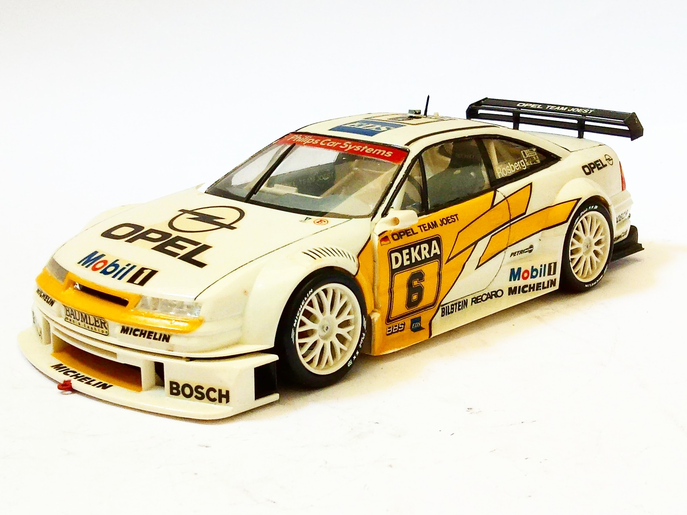
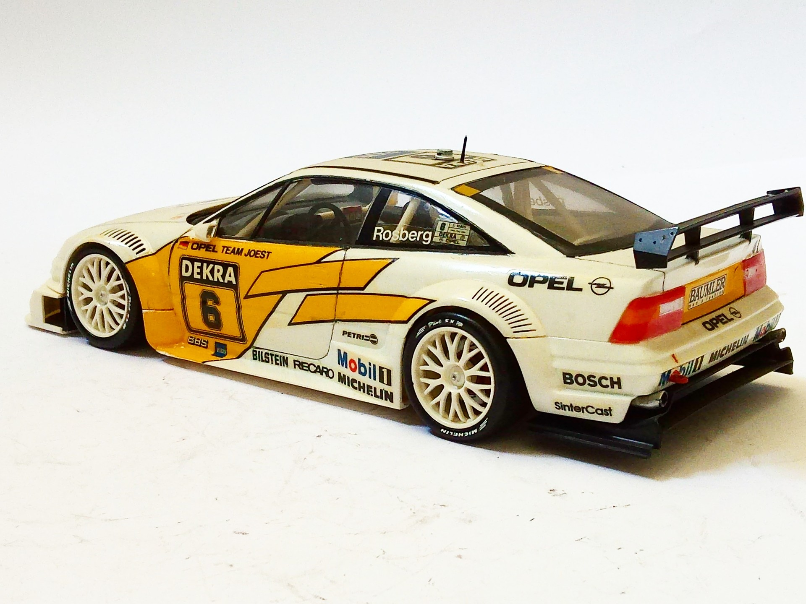
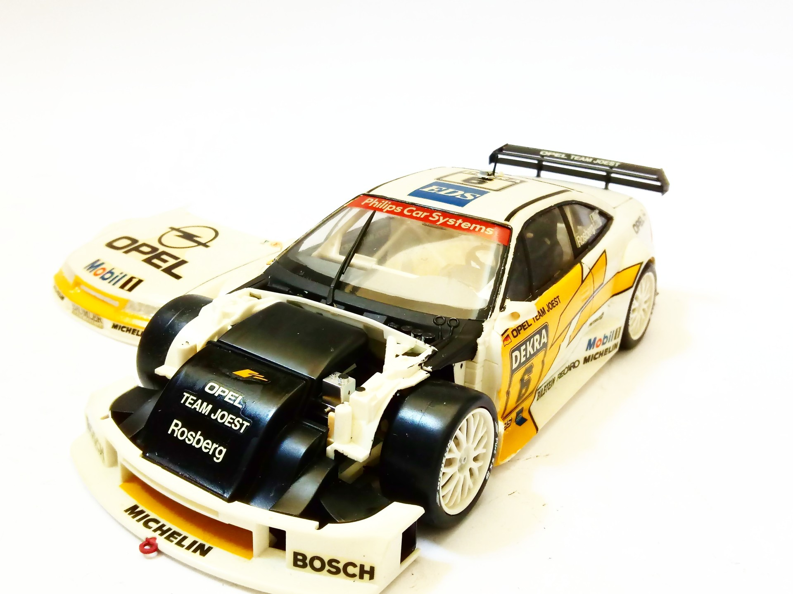
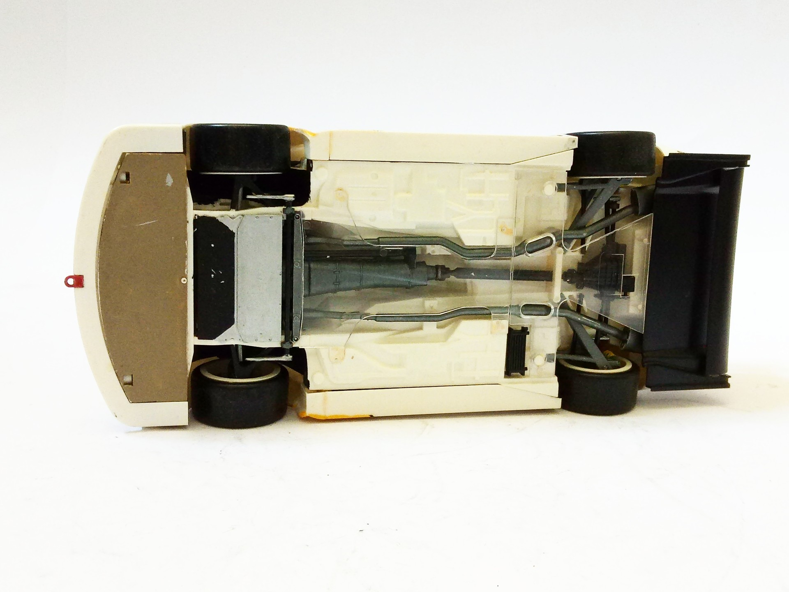

Auto e veicoli stradali · scale model archive
Opel Calibra V6 DTM
Opel Calibra V6 DTM — Kit: Tamiya. Scake: 1/24 DTM 1994 driver: Manuel Reuter #1/24 #Tamiya

Photo gallery



English description
Scake: 1/24
DTM 1994 driver: Manuel Reuter
#1/24 #Tamiya
Descrizione italiana
DTM 1994 pilota: Manuel Reuter.